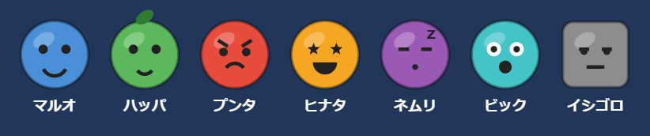

1. 技術構成
| 項目 | 採用 | 理由 |
|---|---|---|
| ビルド | Vite + TypeScript | 静的ビルドのみで動く（ゼロコスト・サーバ不要）。base: "./" でサブディレクトリ配置にも対応 |
| 描画 | Canvas 2D（フレームワークなし） | ゲーム盤面の自由な描画とスマホ性能の両立。依存を最小にする |
| キャラ画像 | コード描画（自作） | 著作権配慮：Snood の画像は使わず、Canvas でオリジナルキャラを描画。素材ファイル不要 |
| 効果音 | Web Audio API（コード生成） | v0.1 はフリー素材を使わずライセンス確認不要の合成音。BGM はフィードバック後に検討 |
| 入力 | Pointer Events | マウス（PC）とタッチ（スマホ）を同一コードで処理。touch-action: none でスクロール抑止 |


掲載スクリーンショットは v0.3.0 時点の画面（フィードバック反映後）。
2. 実装したゲーム仕様
- タイトル画面：Easy / Normal / Hard の 3 レベル選択（project.txt の要件）
- 盤面：六角格子（odd-r オフセット）。撃った snoot は壁で反射し、格子に吸着
- マッチ消去：同種 3 つ以上で消滅。天井から切り離されたピースは落下（落下除去は高得点）
- 危険ゲージ：1 発撃つごとに +1、消した数だけ減少。満タンで天井が 1 段降下（Snood の核心要素を簡略化して再現）
- 終了判定：全消しでクリア（クリアボーナスあり）／ピースが赤い点線（デッドライン）に達するとゲームオーバー
- 連続プレイ：クリア後「次のレベルへ」でスコアを引き継いで再生成盤面に挑戦
- 次弾予告：NEXT 表示。発射弾は盤面に現存する種類のみから抽選（無駄弾を減らす原作後期版の仕様）
- バージョン表示：画面右下に常時表示（step4 の「今プレイ中のバージョンが分かる仕組み」）
難易度パラメータ
step1 の調査値をスマホ画面向けに列数を抑えて調整した。
| 難易度 | 列数 | 初期行数 | キャラ種類 | 危険ゲージ容量 |
|---|---|---|---|---|
| Easy | 9 | 5 | 4 | 10 発 |
| Normal | 11 | 7 | 6 | 8 発 |
| Hard | 13 | 8 | 7 | 6 発 |
オリジナルキャラクター（7 種）

| 名前 | 色 | 特徴 |
|---|---|---|
| マルオ | 青 | 丸目のにっこり顔 |
| ハッパ | 緑 | 頭に葉っぱ |
| プンタ | 赤 | 怒り眉とへの字口 |
| ヒナタ | オレンジ | 星の目と大笑い |
| ネムリ | 紫 | ねむり目と寝息 |
| ビック | 水色 | 白目と驚き口 |
| イシゴロ | 灰色 | 四角い体に半目 |
色覚にかかわらず見分けられるよう、色だけでなく表情・形・付属パーツも種類ごとに変えている。
3. ファイル構成
| ファイル | 役割 |
|---|---|
index.html | ゲームページ（タイトル／ゲーム／リザルトの DOM） |
src/main.ts | エントリポイント。画面遷移とバージョン表示 |
src/game.ts | ゲーム本体（ループ・発射・着弾・描画・入力・HUD） |
src/grid.ts | 六角格子の盤面ロジック（隣接・マッチ・浮き判定・天井降下） |
src/characters.ts | オリジナルキャラ 7 種の Canvas 描画 |
src/audio.ts | Web Audio による効果音 |
src/config.ts | 難易度設定・定数 |
scripts/screenshot.mjs | 動作確認用（ヘッドレスブラウザでスクリーンショット撮影） |
scripts/make-doc-images.mjs | 備忘録掲載用の画像（画面写真・キャラ一覧）を docs/site/img/ に一括生成 |
スマホ・PC 両対応


4. 遊び方
npm install→（開発時）npm run devでローカルサーバー起動、表示された URL を開く- タイトルで難易度を選ぶ
- 画面をなぞって（PC はマウス移動で）ねらいを定め、タップ／クリックで発射
- 同じ顔を 3 つ以上つなげて消す。上手く「落とす」と高得点
- 撃つほど DANGER ゲージが増え、満タンになると天井が降りてくる。全部消せばクリア
5. 動作確認の記録（v0.1.0）
npm run build（tsc 型チェック + Vite ビルド）成功- ヘッドレスブラウザ（PC 1024×768／スマホ 390×844 タッチ）で確認： タイトル表示 → Easy 開始 → 発射 → マッチ消去とスコア加算 → DANGER 増加、を確認済み
- コンソールエラーなし（ファビコン 404 は v0.1.0 で修正済み）
6. 既知の課題・次への持ち越し
- BGM 未実装（フリー素材の選定・ライセンス確認はフィードバック後）
- 特殊ピース（ドクロ等の原作要素）は未実装。step3 の感想を見て検討
- 難易度バランスは机上値。step3 の人間プレイで要調整